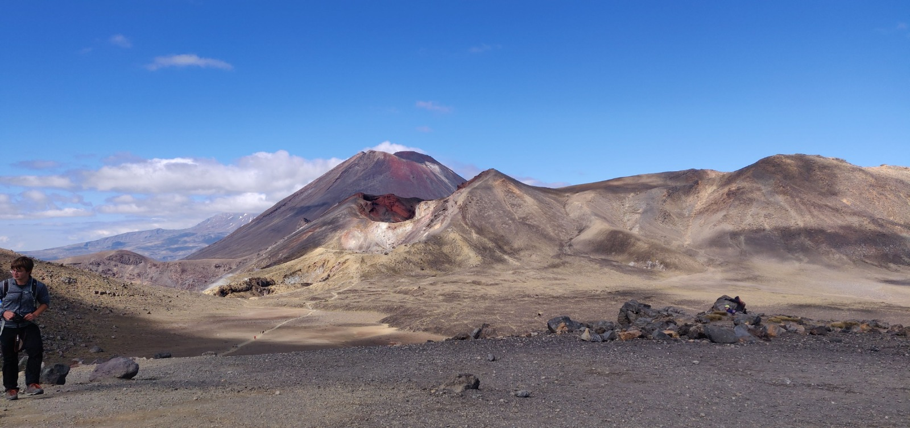

.jpeg)
Top Tips to travel New Zealand
- You will need a visa, so make sure you apply in time for it and research what type of Visa you need
- Do some research before you buy a car. We learnt the stupid way as our first car didn't pass the safety test after 2 months and we had to buy a second car. A lot of money could have been saved, so be smart!
- Download campermate: It shows you best spots to visit, free campsites, find a shower...
- Do not stress if you do not have any plan about what you are going to do. All you need is a booked hostel for the first couple of nights when you arrive and that should be enough
- If you plan to camp or sleep in your car go to New Zealand in summer
- If you camp it is actally worth it to invest in a tent and a pillow
- Don't spend your money all at once and without plan, use the app tricount to keep you on track
- Renting a car is probably more expensive than actually buying a car, so it might be actually worth it to buy one even if you are only there for 2 months


The Tongariro Alpine Crossing is one of the most famous hikes in New Zealand. It is definetely very challenging, but once at the top it is stunning! We woke up at around 5am and started hiking at 6. At later times the hiking trails can get quite busy, so make sure to go early. The highest point is the red crater with 1886 meters and the hike has a length of 19.4 km. It took us around 8 hours to complete the hike and after we were exhausted. Never went to sleep as early as on that day. If you start early, it is pretty cold. We were actually all wearing ski underwear and fleece jackets. Apparently the weather can get really crazy up there so in the bus everyone takes to start the hike they actually check if you have a good rain jacket. Luckily we had a great sunny day and the reflections in the Emerald lake and Blue lake were beautiful. The blue lake is sacred to the Maori, so it is forbidden to touch the water.



.jpeg)
.jpeg)
.jpeg)
This was when we found out that our car didn't pass the driving security test after only using it for 2 months and realising we paid way too much money for a car, which broke down too soon. However, we were very sad when we had to give her up and we didn't even get 50 NZD for her even tough someone told us we would..
.jpeg)
.jpeg)
.jpeg)

.jpeg)
Top Must Do's in NZ
- Abel Tasman Nationalpark
- Tongariro Crossing
- Cape Reinga
- Waiheke Island
- Lake Pukaki
- Lake Tekapo
- Fox Glacier
- Skydiving in Taupo
- Milford Sound
- Aoraki
- Abel Tasman
- Huka Falls
- Lake Matheson
- Rotorua
- Auckland
- Queenstown
- Napier
- Wine tour-Napier, Marlbourough
- Ninety Mile beach
- Piha beach
- Cathedral Cove

.jpeg)

.jpeg)
.jpeg)
.jpeg)
.jpeg)
.jpeg)


.jpeg)
.jpeg)

.jpeg)

.jpeg)
.jpeg)
.jpeg)

.jpeg)
.jpeg)
.jpeg)
.jpeg)